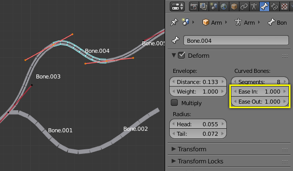
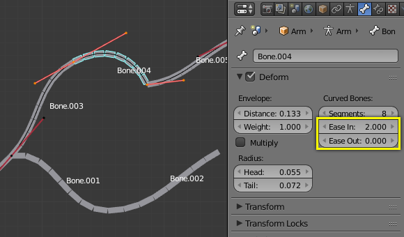

Deform¶
The Deform panel.
In this panel you can set basic properties of the bones.
Turning the Deform option on and off, includes the active bone in the Automatic Weight Calculation when the Mesh is Parented to the Armature using the Armature Deform with the “With Automatic Weights” option.
Also it is worth noting that by turning off a bone’s deform option, makes it not influence the mesh at all, overriding any weights that it might have been assigned before; It mutes its influence.
Envelope¶
Curved Bones¶
Segments¶
- Segments
- The Segments number button allows you to set the number of segments, which the given bone is subdivided into. Segments are small, rigid linked child bones that interpolate between the root and the tip. The higher this setting, the smoother “bends” the bone, but the heavier the pose calculations...
Technical Details¶
When you connect bones to form a chain, Blender calculates a Bézier curve passing through all the bones’ ends, and bones’ segments in the chain will bend and roll to follow this invisible curve. There is no direct access to the curve. It can only be controlled by some extent using bone properties.
However, if the chain has an influence on objects rather than geometry, the segments’ orientation is not taken in account (details are explained in the skinning part).
Display¶
You can see these segments in Object Mode and in Pose Mode, and only if bones are visualized as B-bones or Wire; while in Edit Mode bones are always drawn as rigid sticks. Note that in the special case of a single bone, you cannot see these segments in Object Mode, because they are aligned.
When not visualized as B-Bone s, bones are always shown as rigid sticks, even though the bone segments are still present and effective (see skinning to Object Data). This means that even in e.g. Octahedron visualization, if some bones in a chain have several segments, they will nonetheless smoothly deform their geometry...
Example¶

An armature of B-Bones, in Edit Mode. |

The Bézier curve superposed to the chain, with its handles placed at bones’ ends. |

The same armature in Object Mode. |
In Fig. An armature of B-Bones, in Edit Mode. we connected three bones, each one made of five segments. These are B-bones but as you see, in Edit Mode they are shown as rigid elements. Look at Fig. The same armature in Object Mode., we can see how the bones’ segments smoothly “blend” into each other, even for roll.

An armature in Pose Mode, B-Bone visualization: Bone.003 has one segment, Bone.004 has four, and Bone.005 has sixteen.
Usage¶
Curve bones are an easy way to replace long chains of many small rigid bones. A common use case for curve bones is to model spine columns.
Ease¶
- Ease In, Ease Out
- The Ease In/Out number buttons, change the “length” of the “auto” Bézier handle to control the “root handle” and “tip handle” of the bone, respectively. These values are proportional to the default length, which of course automatically varies depending on bone length, angle with previous/next bones in the chain, and so on.

Look at Bone.004: it has the default In and Out values (1.0). |

Bone.004 with In at 2.0, and Out at 0.0. |
{kind=link}
{kind=link}